Last Updated: 14 July 2016
By: greenline
Email: greenline@yava.ro
Thank you for purchasing my plugin. If you have any questions that are beyond the scope of this help file, please feel free to email via my user page contact form here. Thanks so much!
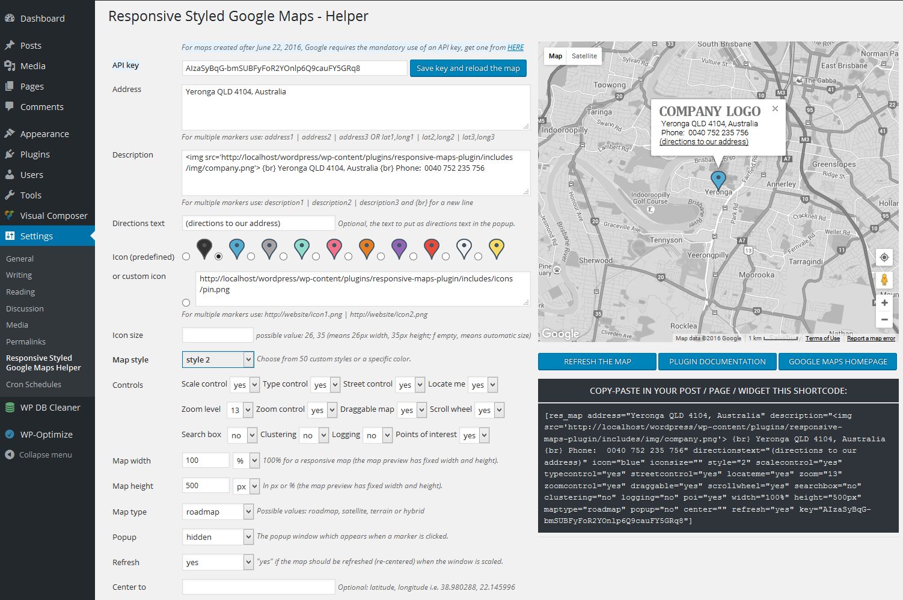
After you download and activate the plugin, just open in edit mode any post, custom post type, page or widget and write this simple shortcode to generate a map in that place: [res_map address="street, city, country"]. To customize the map, go to your wordpress admin panel, navigate to Settings -> Responsive Styled Maps Helper menu item. It will open the plugin's panel, where you can customize various settings.
EXAMPLES:
1) Map with two markers (two addresses); they are separated with the | (pipeline) symbol:
[res_map address="L'Île-Perrot, QC, Canada | Notre-Dame-de-l'Île-Perrot, QC, Canada" description="L'Île-Perrot, QC, Canada | Notre-Dame-de-l'Île-Perrot, QC, Canada" directionstext="(directions to our address)" icon="green | green" style="2" scalecontrol="no" typecontrol="no" streetcontrol="no" zoom="11" zoomcontrol="no" draggable="yes" scrollwheel="no" searchbox="no" clustering="no" logging="no" poi="yes" width="880px" height="500px" maptype="roadmap" popup="no" center="" refresh="no"]
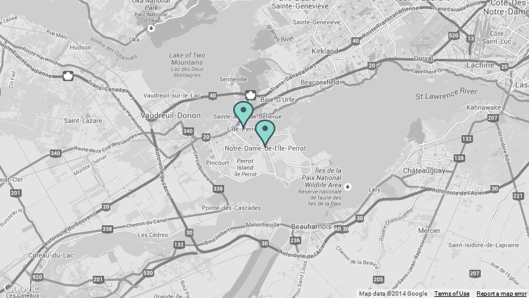
2) Map with address given with latitude/longitude and zoom=8:
[res_map address="45.95115,-102.509769" description="First line of text" directionstext="(directions to our address)" icon="yellow" style="14" scalecontrol="no" typecontrol="no" streetcontrol="no" zoom="8" zoomcontrol="no" draggable="yes" scrollwheel="no" searchbox="no" clustering="no" logging="no" poi="yes" width="880px" height="500px" maptype="roadmap" popup="no" center="" refresh="no"]
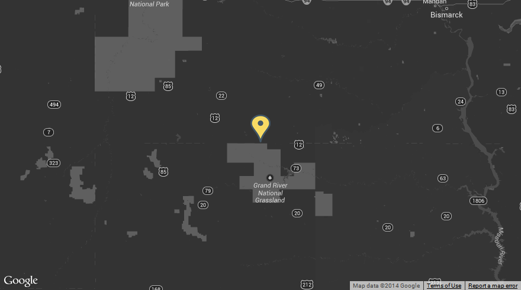
3) A black & white map:
[res_map address="Yeronga QLD 4104, Australia" description="Yeronga QLD 4104, Australia {br} Phone: 0040 752 235 756" directionstext="(directions to our address)" icon="black" style="24" scalecontrol="no" typecontrol="no" streetcontrol="no" zoom="14" zoomcontrol="no" draggable="yes" scrollwheel="no" searchbox="no" clustering="no" logging="no" poi="yes" width="880px" height="500px" maptype="roadmap" popup="yes" center="" refresh="no"]
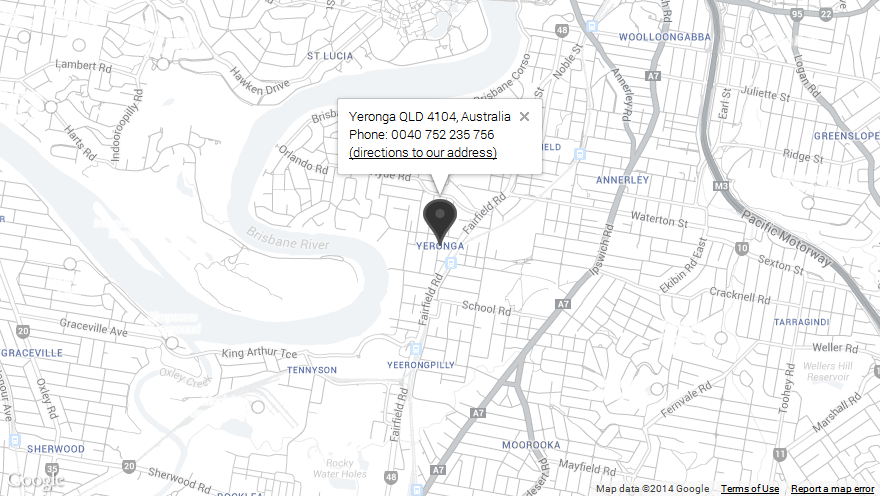
4) Format the description inside the popup on multiple lines and add a logo to the popup (if you wish to display the text in the info popup window on multiple lines, please use the {br} expression):
[res_map address="Yeronga QLD 4104, Australia" description="<img src='http://yava.ro/images/company.png'> {br} Yeronga QLD 4104, Australia {br} Phone: 0040 752 235 756" directionstext="(directions to our address)" icon="http://yava.ro/icons/car.png" style="22" scalecontrol="no" typecontrol="no" streetcontrol="no" zoom="14" zoomcontrol="no" draggable="yes" scrollwheel="no" searchbox="no" clustering="no" logging="no" poi="yes" width="880px" height="500px" maptype="roadmap" popup="yes" center="" refresh="no"]
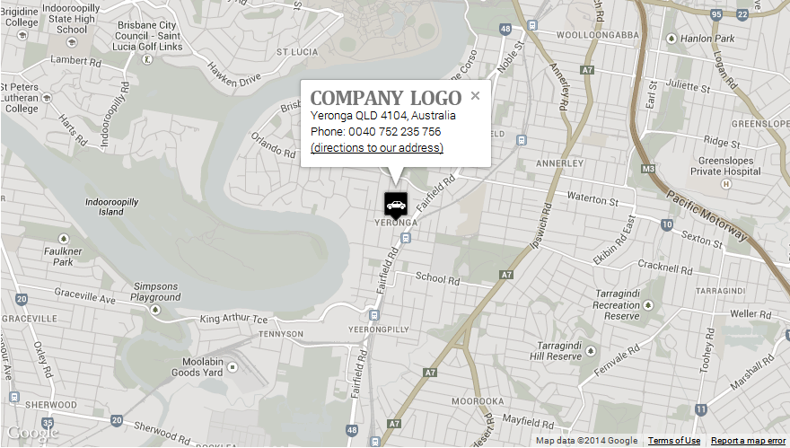
5) Change the icon color:
[res_map address="Yeronga QLD 4104, Australia" description="Yeronga QLD 4104, Australia {br} Phone: 0040 752 235 756" directionstext="(directions to our address)" icon="blue" style="25" scalecontrol="no" typecontrol="no" streetcontrol="no" zoom="14" zoomcontrol="no" draggable="yes" scrollwheel="no" searchbox="no" clustering="no" logging="no" poi="yes" width="100%" height="500px" maptype="roadmap" popup="yes" center="" refresh="no"]
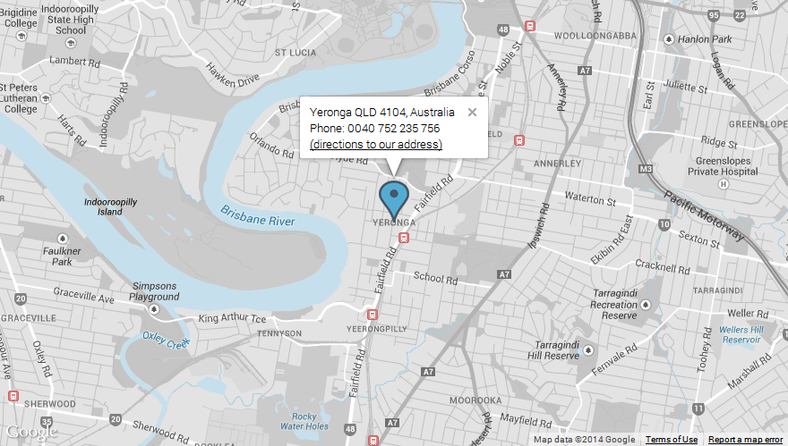
6) Change the map style:
[res_map address="Yeronga QLD 4104, Australia" description="Yeronga QLD 4104, Australia {br} Phone: 0040 752 235 756" directionstext="(directions to our address)" icon="red" style="28" scalecontrol="no" typecontrol="no" streetcontrol="no" zoom="18" zoomcontrol="no" draggable="yes" scrollwheel="no" searchbox="no" clustering="no" logging="no" poi="yes" width="100%" height="500px" maptype="roadmap" popup="yes" center="" refresh="no"]
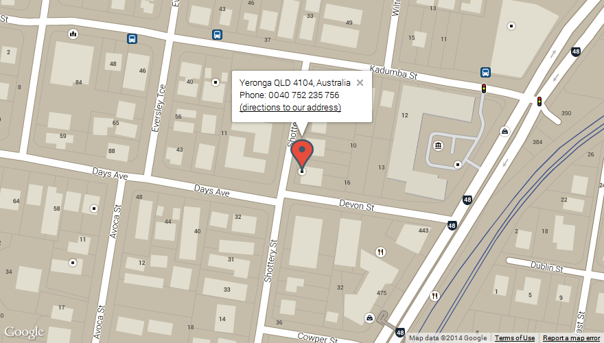
7) Use a custom marker icon:
[res_map address="Yeronga QLD 4104, Australia" description="Yeronga QLD 4104, Australia {br} Phone: 0040 752 235 756" directionstext="(directions to our address)" icon="http://yava.ro/icons/car.png" style="30" scalecontrol="no" typecontrol="no" streetcontrol="no" zoom="18" zoomcontrol="no" draggable="yes" scrollwheel="no" searchbox="no" clustering="no" logging="no" poi="yes" width="880px" height="500px" maptype="roadmap" popup="yes" center="" refresh="no"]
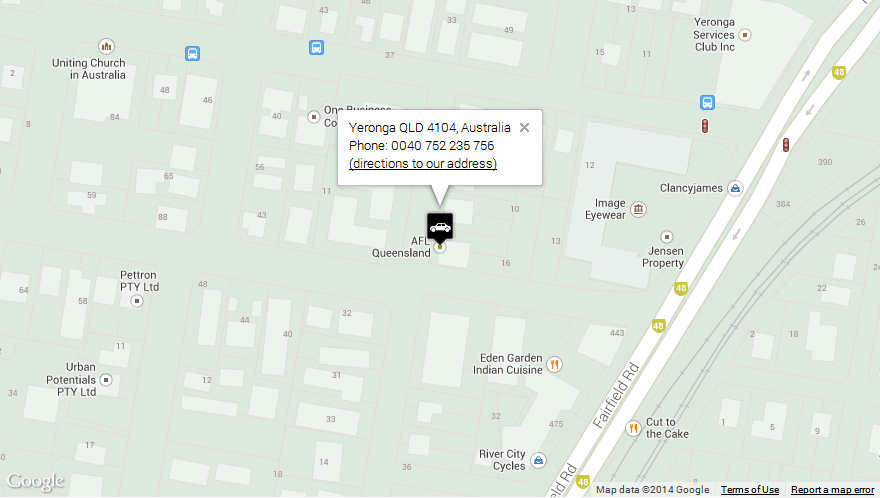
8) Show/hide the controls. Every other control in the map can be shown / hidden by specifying its corresponding parameter. So that you can customize your map in every possible way: you have full control on what to show on the map.
[res_map address="Yeronga QLD 4104, Australia" description="Yeronga QLD 4104, Australia {br} Phone: 0040 752 235 756" directionstext="(directions to our address)" icon="orange" style="22" scalecontrol="yes" typecontrol="yes" streetcontrol="yes" zoom="19" zoomcontrol="yes" draggable="yes" scrollwheel="yes" width="880px" height="496px" maptype="terrain" popup="yes" center="" refresh="no"]
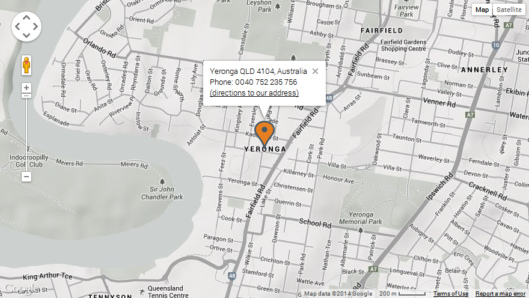
9) How to use a custom link in the marker popup:
Just use the custom link in the description area like this:
[res_map address="New York" description="<a href='http://google.com' target='_blank'>the link here</a> {br} another line of text here" directionstext="" style="2" popup="yes"]
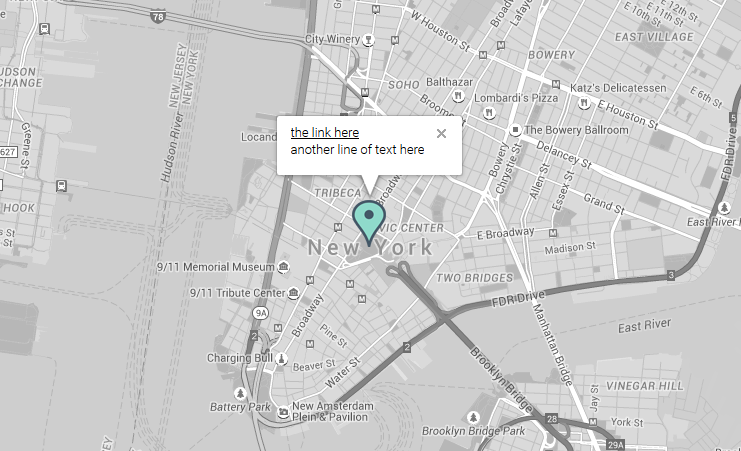
10) How to use the shortcode in a theme:
Just use echo do_shortcode statement in any post, page or custom page template, like this:
<?php echo do_shortcode( '[res_map address="37.532599,25.191723" description="<img src=\'http://yava.ro/images/company.png\'> {br} Yeronga QLD 4104, Australia {br} Phone: 0040 752 235 756" directionstext="(directions to our address)" icon="green" style="12" scalecontrol="no" typecontrol="no" streetcontrol="no" zoom="14" zoomcontrol="no" draggable="yes" scrollwheel="no" width="100%" height="500px" maptype="roadmap" popup="yes" center="37.532599,25.191723" refresh="no"]' ); ?>
11) Markers list. If you wish to have besides the map a list with all the locations and when you click on a link, the corresponding marker to be open, just use the following code in your page:
<a href="javascript: openMarker(1, 1);">New York</a> <a href="javascript: openMarker(1, 2);">Maryland</a> [res_map address="New York | Maryland" icon="green | green" style="2" zoom="6" width="880px" popup="no"]
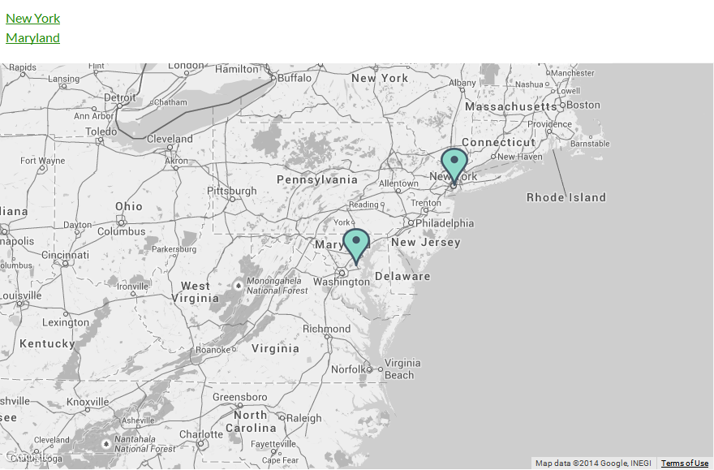
12) How to set the pin icons for retina support:
If you want to have retina support for the pin icons (so that they do not appear pixelated when zoomed in - on retina screens, for instance on iPhone4 - you will need a bigger, sharp icon and in the map shortcode you'll set the iconsize to 1/2 of the real size of that big icon. This way, on retina screens, when zoomed-in, the icon will look sharp.
For instance, let's say you want to use as pin icon an image: pin@2x.png (having width=30px and height=50px), for retina support, your map shortcode will be like this:
[res_map address="New York" icon="http://website.com/pin@2x.png" iconsize="15, 25" style="2" popup="yes"]
where 15,25 means width, height to which to scale (and are equal to half of the width=30px and height=50px)
To customize the map, add parameters like this: [res_map parameter1="value" parameter2="value"] or go to your wordpress admin panel, navigate to Settings -> Responsive Styled Maps Helper menu item. It will open the plugin's panel, where you can customize map settings. You can copy-paste the shortcode and insert it in your post or page or widget, where you want the map to appear.
Below is the full list of possible parameters plus their default and possible values:
When you use physical addresses, Google Maps server takes time to translate them one by one to a latitude, longitude coordinate. Only after that they are displayed on the map. To avoid this operation and improve loading time, please use your locations in a latitude, longitude format, for instance: [res_map address="51.648450, -1.841401 | 51.450201, -1.291792 | 51.182451, -1.374161 | 51.021711, -1.489974 | 50.893711, -1.445973 | 50.881053, -1.269805"...] where 51.648450, -1.841401 is a location on the map, 51.450201, -1.291792 is another location on the map and so on.
Yes, it is possible, I’ve prepared a demo for this:
http://yava.ro/test93/ .
You can contact me at greenline@yava.ro
This error appears if the theme you are using is not coded correctly. Please contact the theme author and make sure he has included wp_footer() in the footer correctly as explained here and also wp_head() as explained here.
Please make sure you are using a width and height in the shortcode. Do not leave empty the width and height parameters in the shortcode. If you are using width="100%" but the map still does not show up, maybe the theme you are using is not responsive. Try usinga fixed width, for instance width="500px" and if the map shows up after this, please contact the theme author, because in this case the page of the theme is not responsive and you can't use % widths...
Please make sure that in the shortcode, insode the description field you only use simple apostrophes in the HTML content you put there.
This is correct:
[res_map...description="<img src='http://someimage.png' alt='someimage'>"...]
This is NOT correct:
[res_map...description="<img src="http://someimage.png" alt="someimage">"...]
Please add in your page, immediately after the [res_map] shortcode, this CSS code that will center the content in the popup window:
<style>
.gm-style-iw {white-space: pre-wrap !important;text-align: center !important;}
<style>
Yes here is an example with the shortcode included: http://yava.ro/test62/
Solution 1: When you create a page or a post, in the backend editor of Visual Composer, just create a text block and put there the map shortcode.
Solution 2: If you wish to create/edit the map in a more visual way, import the below map shortcode, into the "My shortcodes" section in Visual Composer, like in the video:
[res_map address="Yeronga QLD 4104, Australia" description="<img src='http://localhost/wordpress/wp-content/plugins/responsive-maps-plugin/includes/img/company.png'> {br} Yeronga QLD 4104, Australia {br} Phone: 0040 752 235 756" directionstext="(directions to our address)" icon="blue" style="2" scalecontrol="no" typecontrol="no" streetcontrol="no" zoom="13" zoomcontrol="no" draggable="yes" scrollwheel="no" searchbox="no" clustering="no" logging="no" poi="yes" width="100%" height="500px" maptype="roadmap" popup="no" center="" refresh="yes" publisherid="" adbg="#ffffff"]
Credits:
14.07.2016 - version 4.0 - Added a new shortcode parameter: iconsize (for retina support) - Updated the translation file 27.06.2016 - version 3.4 - Added the possibility to enter a Google Maps API key (required by Google after 22 June 2016) 21.05.2016 - version 3.3 - Moved the clustering icons inside the plugin (they were removed from public CDN) - Fixed the max-width and max-height issue for compatibility with some free themes
(some free themes limit the max-width and max-height of all images to 70%-80%, breaking the maps imagery) 19.02.2016 - version 3.2 - Updated to the latest version the included marker clusterer library - Fixed the incompatibility with WP External Links plugin (by fixing how description in popup is generated) - Added locate me feature / button - Fixed the admin form looking on latest Google Chrome - Removed in the getstylestring function the code that was doubled - Removed adsense feature because it has been deprecated by Google (see this for details https://developers.google.com/maps/documentation/javascript/advertising ) - Map scripts are now loaded in footer for faster loading - Added two CSS settings to avoid conflicts with themes which set images width 05.01.2016 - version 3.1 - Renamed a CSS id from #shortcode to #resmap_shortcode, to avoid conflict with ShortcodeMenu plugin in admin area - Removed the "sensor" parameter from the Maps API call, it became deprecated 25.09.2015 - version 3.0 - Changed the location of the search box to the left corner, due to recent Google Maps API controls changes - Removed pan control completely, because it was also removed from the Google Maps API - Replaced __ with esc_html__ for better security in the file responsive-styled-google-maps-admin.php - Default language files (.mo and .po) updated 12.08.2015 - version 2.29 - Replaces data- attributes with javascript (buyers request) 26.07.2015 - version 2.28 - Added shortcode support for text widgets 17.07.2015 - version 2.27 - Fixed the translations loading issue - Fixed the too general CSS rules - Moved all javascripts to JS files - Fixed a bug with the search field - Moved functions from responsive-styled-google-maps-functions.php to the main file of the plugin - Added 10 new map styles - Removed redundant code - Updated documentation 04.06.2015 - version 2.26 - Resized icons to 75% for better visibility on mobile devices - Search bar moved at the bottom side to not overlap with map type control - Added feature to show/hide the points of interest - Updated documentation with FAQ 24.05.2015 - version 2.25 - Added search box option - Added clustering option - Added logging (in browser console) option - Updated the included documentation 30.10.2014 - version 2.24 - Fixed map display with certain tabs frameworks - Fixed calling markers list for multiple maps in a page 01.08.2014 - version 2.23 - Added back Adsense option 22.05.2014 - version 2.22 - Fixed map re-centering on window resize 14.05.2014 - version 2.21 - Replaced the default icons with more visible ones - Moved the javascript from the php file to separate js file 04.05.2014 - version 2.20 - Fix for the infowindowanchor because some web hosting providers disable access to the PHP getimagesize function 10.04.2014 - version 2.19 - Added 10 new map styles - Added a color picker to the map styles - Added automatically detection of icon's width and height, so that infowindow is automatically positioned - Added automatic detection when maps used with tabs and the fix accordingly - Corrected link for SSL connections to Google Maps API - Fixed a bug with empty directions link - Code refactoring in back-end for performance improvements - Added to CSS the "max-width: none" to prevent popup conflicts with some themes - Moved inline CSS to separate file from the admin panel - Fix to include the plugin's files in WordPress admin area only when on map settings page - Fixed the bug when map was not displayed when used in footer widgets - Added a default translation file in lang folder - Fixed shadow on icons - Removed the double flickering when maps were displayed 24.12.2013 - version 2.18 - Minor style changes to plugin's panel, due to WordPress 3.8 changes - Changed plugin's url to codecanyon plugin's url - Changed in markers CSS the white-space to nowrap (to avoid text issues in the marker popup) - Added to the documentation an example about how to integrate the shortcode directly in theme templates. 19.11.2013 - version 2.17 - Fixed in the back-end the icon anchor for some zoom levels. - Re-sized, for better-looking, the marker icons from 32x47px to 29x43px. 12.11.2013 - version 2.16 - Introduced back the pre-defined map styles (30) (the parameter named style instead of the parameter color). - Iconanchor and infowindowanchor fixes - CSS and look improvements 31.10.2013 - version 2.15 - Renamed file functions.php to avoid conflicts with some themes - Fixed the generated icons color names in the shortcode when multiple markers are used 24.10.2013 - version 2.14 - Fixed icon anchor (it shows now the correct street at largest zoom) 25.09.2013 - version 2.13 - Added feature: possibility to set a different icon for each marker 12.09.2013 - version 2.12 - Added new shortcode parameter: refresh (if the map should be refreshed when the window is scaled) 06.09.2013 - version 2.11 - Added the "UPDATE MAP" button to plugin's admin panel - Smaller icons (many buyers have requested it) - Removed (for stability issues) the map's refresh when the window is scaled - CSS fixes for tablets in portrait mode - Added new setting: draggable (if the map should be draggable by mouse or hand gestures) - Added new setting: scrollwheel (if the map should zoom in/out when mouse scroll is used) - Fixed parsing issues with French addresses and directions text containg apostrophes - Fixed the conflict with some SEO plugins (due to single or double apostrophes conflicts) 20.08.2013 - version 2.10 - Small bug fix on window resize event for Safari on iPhones older than 4S 18.08.2013 - version 2.9 - Added fix after resize function for map on window resize event (re-center map when window resizes) 16.08.2013 - version 2.8 - CSS fixes for markers info windows (required by Google API updates last night regarding the info windows) 15.08.2013 - version 2.7 - Removed the style parameter and added color parameter instead (to be able to use any possible color for the map) - Fixed the Google Maps API server message "Sensor parameter must be either true or false" for some mobile phones - Small CSS customizations - Directions link is now optional (you can display it or not) - New modern colors for pre-defined icons - Ads removed => faster loading 15.07.2013 - version 2.6 - Added the possibility to use {br} to insert a new line in the description field - Improved the accuracy of the location when latitude/longitude are used - Small CSS customization (reset the line-height to remove the vertical scrollbar in the popup window) - Renamed the gMap function to not conflict with other map plugins or with themes 26.05.2013 - version 2.5 - Improved loading time by importing the adsense library only when needed - Small CSS customization (removed marked shadows, rounded info window corners) - Added possibility to specify a custom marker icon 18.03.2013 - version 2.4 - Improves pages loading by loading javascript and css only when shortcode is called - Added a new shortcode parameter(optional) named "center" to be able to center a map with many markers 12.03.2013 - version 2.3 - Removes the "Too many markers, switching to one marker per mode" javascript message - Replaces the ampersand with its code in the url to google maps library 17.02.2013 - version 2.2 - Fixes the move of the icon marker when the map is zoomed in/out 11.02.2013 - version 2.1 - Small JS fix for map shadows 09.02.2013 - version 2.0 - Added a plugin panel (with shortcode generator and map preview, both in real-time) - Added multiple markers support - Added possibility to show adsense ads over the corner of the map - Marker's description now supports both text and html code 02.02.2013 - version 1.1 - Fixed the marker shadow offset - Fixed the css interfering with themes css 31.01.2013 - version 1.0 - The initial version
Once again, thank you so much for purchasing this plugin. As I said at the beginning, I'd be glad to help you if you have any questions relating to this plugin. Please email me at greenline@yava.ro